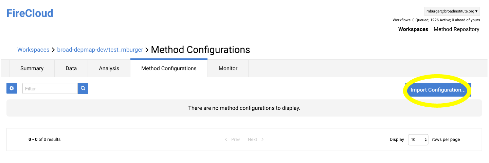

FireCloud Workflow¶
FireCloud is a cloud-based genomics anlaysis platform developed at the Broad Institute. Billing is handled by the Google Cloud Platform, allowing FireCloud to be accessible to users external to the Broad Institute.
Register a FireCloud Account¶
First, register for FireCloud using the FireCloud portal. This step only requires a Google account, such as Gmail.
Second, create a Google Billing Account and attach it to the FireCloud account following these instructions. Google offers promotional credit for new accounts so new users can try CRISPR-Seq for free.
Create a Workspace¶
From the FireCloud portal, create a new workspace by clicking on the
Create New Workspacebutton in the upper right corner of the main page. Workspace names within the same billing project must be unique so if you share the billing account with others, you might want to include your username in the workspace name, e.g.CRISPRseq_<username>.
After creating the workspace, the summary tab will be displayed. In order to run the CRISPR-Seq analysis, the method definition must be imported into the workspace. Move to the
Method Configurationstab and selectImport Configuration....Enter “crisprseq” into the search field and select
Configs Only. Select the most recent snapshot of the cpds/crisprseq and import it with the default namespace.
When returning to FireCloud at a later time, use the filter on the main page to search for the workspace name and return to the summary tab.
Moving FASTQ to Google bucket¶
If the FASTQ files is on the local machine, it might be easiest to upload the files directly to the bucket using the web interface. However, if the files are not local, the gsutil has a function to move files directly to the bucket using the command line:
gsutil cp *.fastq gs://<bucket>
Upload Multiplex Barcodes¶
The barcode annotation is a two column, comma separated text file with the sample name in the first column and the barcode in the second column. Sample names must be unique and contain only alphanumeric characters, underscore, and hyphen. Here is an example of a barcode annotation table with 10 samples:
BC_1 AAGAACTA BC_2 AACTTGTA BC_3 CCAGTGAT BC_4 TTGATGCG BC_5 GGTCGTGC BC_6 GGAGTGTA BC_7 TTAGACCG BC_8 CCGAACAT BC_9 GGTCCACG BC_10 GGCTCAAT Save the barcode annotation table as a .csv and upload it to the workspace Google Bucket.
Upload gRNA Annotation¶
The gRNAs used should be listed in a comma separated text file (.csv) with four columns; gene, strand, cut, and amplicon. Below is an example table for an experiment targeting 8 genes with one guide per gene. The column definitions are as follows:
gene: Any unique gene symbol identifier. If the same gene is targeted with multiple guides, say STAG2 is targeted with two gRNAs, the names should be something like STAG2_1 and STAG2_2.strand: Indicates whether the gene is on the forward or reverse strand using + or - respectively.cut: Specifies the Single base location representing the predicted cut site between the gRNA and the PAM in hg19 coordinates.amplicon: Range from start to end of sequencing amplicon using hg19 coordinates.
gene strand cut amplicon SMC3 + 10:112341797 10:112341673-112341888 TET2 - 4:106155180 4:106155115-106155320 ASXL1 - 20:30956834 20:30956741-30956945 NF1 - 17:29422368 17:29422233-29422455 DNMT3A + 2:25523085 2:25522993-25523179 RUNX1 + 21:36421160 21:36421063-36421273 AS12 + 20:31022712 20:31022643-31022847 STAG2 + X:123195699 X:123195623-123195747 Save the gRNA annotation table as a .csv and upload it to the workspace Google Bucket.
Upload negative control annotation¶
Negative controls can be annotated in two forms; a list of samples, or a sample by gene matrix. If each negative control sample is a negative control for all target genes, the negative control samples can be listed with one on each line:
If negative control samples only serve as negative controls for particular gene targets, a binary sample by gene matrix can be used to indicate which sample/gene pairs are negative controls.
SMC3 ASXL1 TET2 AS12 STAG2 NF1 RUNX1 DNMT3A BC74 1 1 1 1 0 0 0 0 BC75 1 1 1 1 0 0 0 0 BC76 1 1 1 1 0 0 0 0 BC77 1 1 1 1 0 0 0 0 BC78 1 1 1 1 0 0 0 0 BC79 1 1 1 1 0 0 0 0 BC85 1 0 0 0 0 1 1 1
Add Data Entity to Workspace¶
From the Data tab within the workspace, select import data. Upload a file with 1 row and
Launch Analysis¶
View Results¶
When the analysis is finished new columns will be added to the Data Entity. Clicking on the link in the table will take you to the Google Bucket with the output files. Descriptions of the outputs can be found here (ref).